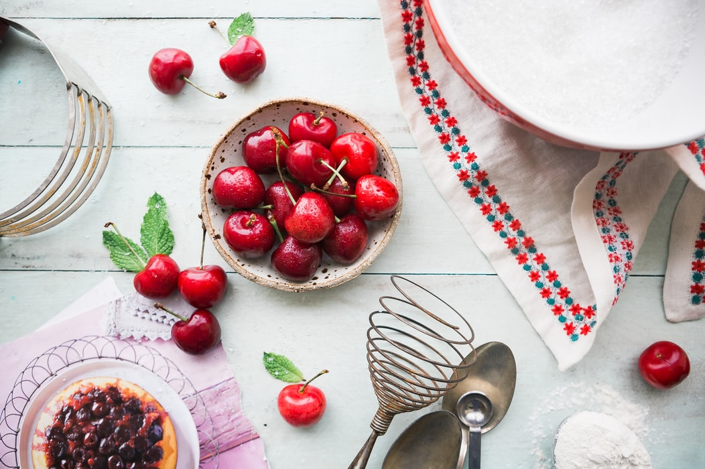

 LoFood cherries make a wonderful snack, anytime. Cherries are distinguished by their beautiful deep ruby skin and flesh. Cherries are soft to the touch and very plump and juicy, perfect for a light dessert. Desired for their mouthwatering, sweet, rich flavour, cherries can enhance many summer dishes. Enjoy fresh cherries as an addition to mixed fruit salads or in a freshly baked pie. For the sake of our customers, the land, the farmworkers and the fruit is certified organic, so there are no chemical pesticides here. Store cherries in the refrigerator and handle with care. Cherries are sweetest in flavour when eaten ripe, with deep colouring and are soft to the touch. Since 1954, our family established the Viltain’s farm which is composed of a stock farming, a dairy, a fruit and vegetable pick-your-own and a market located in Jouy-en-Josas at 17km from Paris. Our farm is successful because of the quality of our products and the attractiveness of locally produced food in France. Everything we produce is organic without the use of pesticides of any kind.
Order Now!
| Name | Description | Price | Quantity (Kg) |
|---|---|---|---|
| Cherries | From Viltain's Farm. | 5€/kg | |